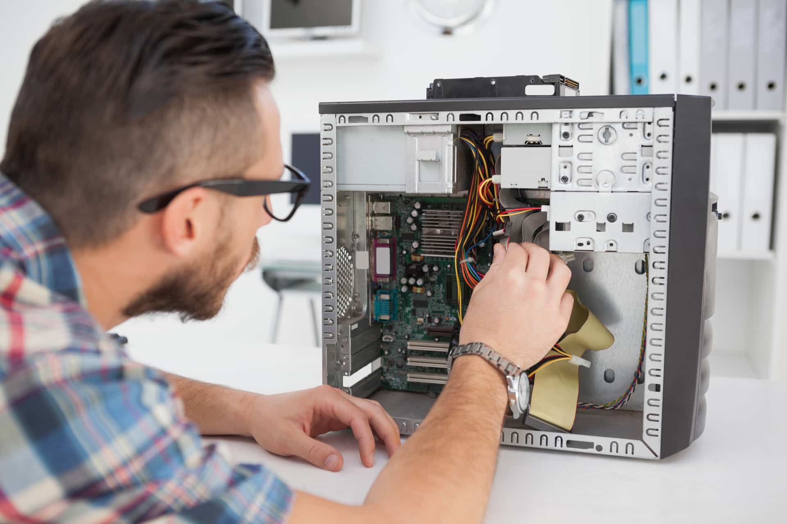

Services
Network Security
Network security services help protect a business' network from unauthorized access. IT services can create and issue access authorization to those who need it. They also provide many other services to protect your network, including:
- Building firewalls
- Installing anti-virus software
- Installing virtual private networks (VPNs)
- Performing regular network checkups

Software development
IT services can often include software development processes to create custom applications that fulfill specific business needs. For example, a startup business may rely on its IT service team to create a software application for organizing and maintaining venture capitalist records. In these cases, IT can provide the services you need to develop personalized software and ensure the program's viability through continuous testing, development and maintenance.

Hardware installations and maintenance
Many business IT services also include hardware installations, maintenance and repairs. For instance, a corporate IT department is often responsible for installing the computers, hard drives, printers, modems and routers that the company needs to operate. IT teams also evaluate a business's processes to determine the types of hardware that support its needs. In many businesses, technical teams are also responsible for maintaining hardware and updating computers, modems or routers to support productivity and performance.
